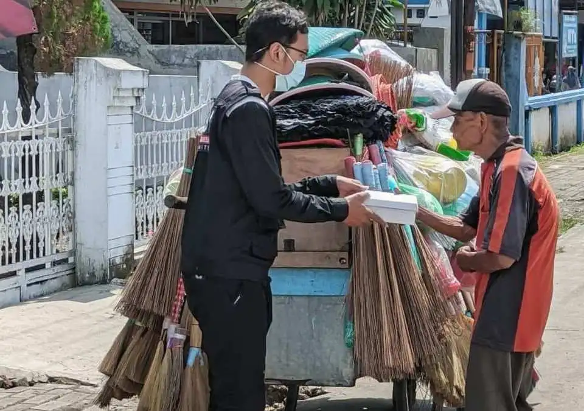
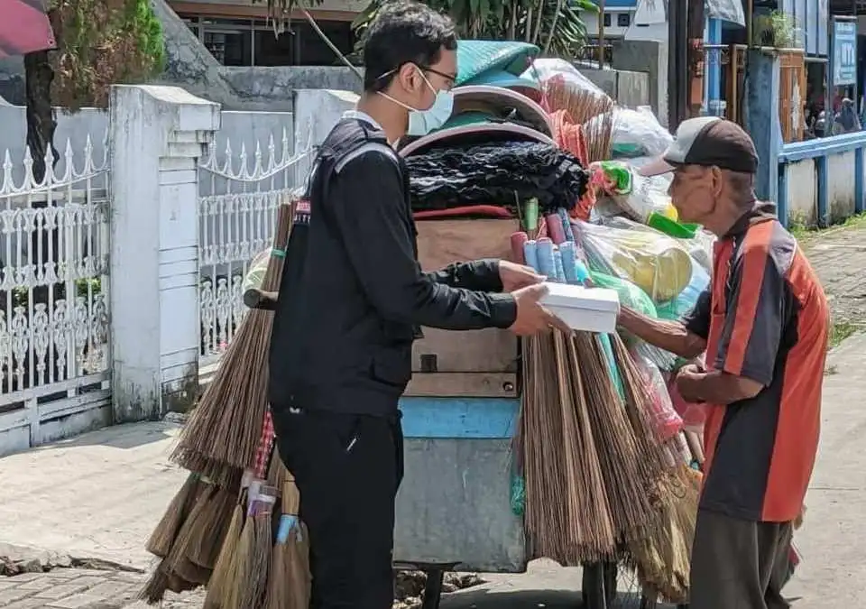

Salah satu pengalaman pribadi yang menurutku sangat berkaitan dengan SDGs ke-2 adalah ketika aku pernah membagikan makanan sederhana kepada orang-orang yang membutuhkan. Waktu itu, aku dan keluargaku menyiapkan beberapa bungkus makanan yang isinya nasi, telur, dan sayur—makanan yang mungkin terlihat biasa untuk banyak orang, tapi sangat berarti bagi mereka yang sulit mendapatkan makanan layak setiap hari. Kami membagikan makanan itu kepada orang-orang yang kami temui di pinggir jalan, seperti tukang becak, pemulung, dan pekerja informal lain yang terlihat membutuhka
Selain makanan siap makan, aku juga pernah ikut membagikan beberapa bahan kebutuhan pokok seperti beras, minyak goreng, dan mi instan supaya mereka bisa menyimpan persediaan untuk beberapa hari ke depan. Melihat ekspresi mereka yang senang dan merasa terbantu membuat aku sadar bahwa masalah kelaparan itu benar-benar nyata dan terjadi dekat dengan kehidupan kita. Pengalaman ini membuatku lebih paham bahwa aksi kecil seperti memberi makanan ternyata bisa mendukung tujuan SDGs ke-2 dalam mengurangi kelaparan dan meningkatkan akses pangan bagi masyarakat yang kurang beruntung. Walaupun sederhana, aku merasa ikut berkontribusi dalam upaya untuk membantu orang lain mendapatkan makanan yang layak.
 
